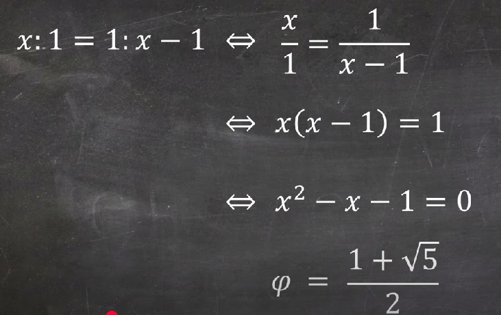
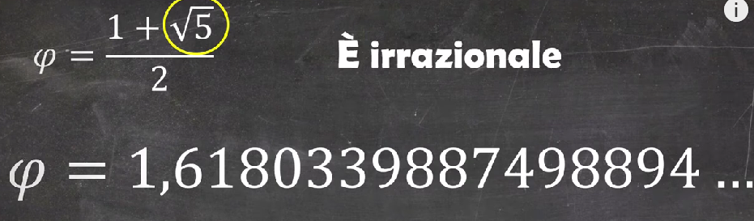
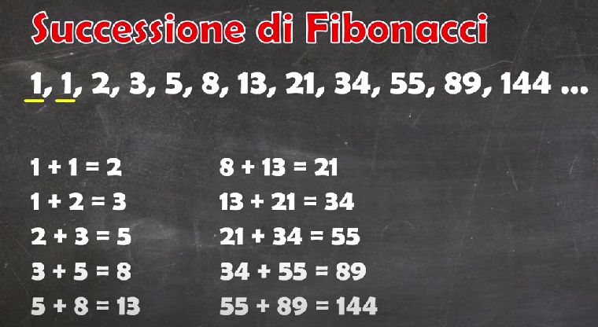
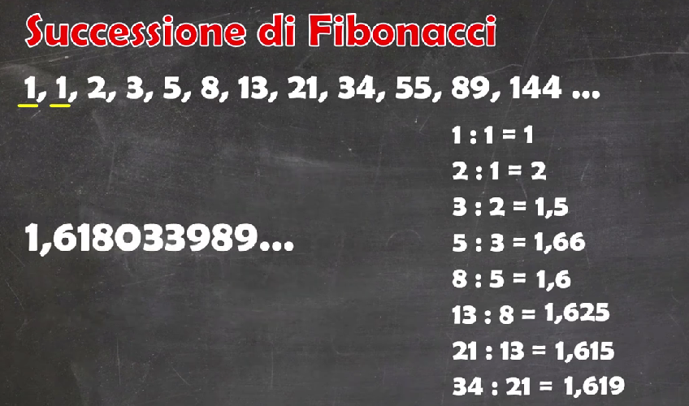
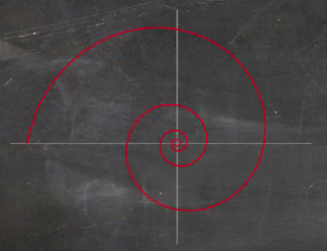
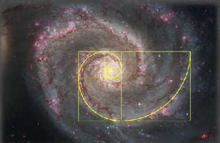
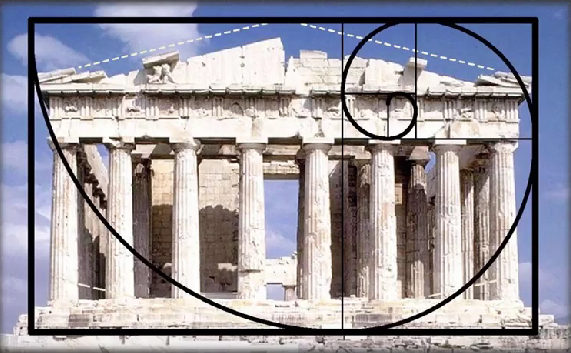

Il numero aureo, denotato con φ, è un numero irrazionale con approssimazione 1,618033988749895, che ha affascinato matematici, artisti e scienziati per secoli grazie alle sue proprietà uniche e alla sua presenza in numerosi fenomeni naturali, strutture geometriche e opere artistiche. Questo articolo esplora le principali caratteristiche matematiche di φ, inclusa la sua definizione tramite l'equazione quadratica x2=x+1 e la sua connessione con la successione di Fibonacci. Inoltre, vengono analizzati i metodi numerici per il calcolo di φ, come la successione di Fibonacci, la formula esplicita e le serie di potenze, evidenziando la velocità di convergenza e la precisione di questi approcci. Infine, vengono esplorate le applicazioni del numero aureo in diversi ambiti, dalla geometria all'arte, dalla biologia alla progettazione architettonica. Il numero aureo si rivela quindi una costante matematica di grande rilevanza teorica e applicativa, che continua a stimolare studi e ricerche in vari campi.
The golden ratio, denoted by φ, is an irrational number approximately equal to 1.618033988749895, which has fascinated mathematicians, artists, and scientists for centuries due to its unique properties and its presence in numerous natural phenomena, geometric structures, and artistic works. This article explores the main mathematical characteristics of φ, including its definition through the quadratic equation x2=x+1 and its connection with the Fibonacci sequence. Additionally, numerical methods for calculating φ, such as the Fibonacci sequence, the explicit formula, and power series, are analyzed, highlighting the convergence speed and precision of these approaches. Finally, the applications of the golden ratio in various fields, from geometry to art, biology to architectural design, are explored. The golden ratio thus proves to be a mathematical constant of great theoretical and practical relevance, continuing to stimulate studies and research in various fields.
Il numero aureo, rappresentato dalla lettera greca φ (phi), è un numero irrazionale che ha trovato applicazioni in numerosi ambiti della matematica, dell'arte, dell'architettura e della natura. Il valore di φ è circa 1,618033988749895, ma la sua rappresentazione decimale continua all'infinito senza ripetersi. In questo articolo, esploreremo le principali proprietà del numero aureo e analizzeremo i metodi numerici per calcolarlo con un'alta precisione.
Nel VI libro compare la seguente definizione: Una retta è divisa in media ed estrema ragione quando la lunghezza della linea totale sta a quella della parte maggiore come quella della parte maggiore sta a quella della minore.
Ma come tutto questo ha a che fare con il numero aureo?
Risolvendo questa equazione, otteniamo due radici, ma solo quella positiva è significativa in contesti matematici ed estetici. In termini numerici, la soluzione è:
Nel 1202 ci fu un italiano, Leonardo Pisano, noto come Fibonacci, che si imbattè nel numero aureo:
Alla fine di ogni mese il numero di coppie di conigli che si ottiene è riportato in questa successione, in cui ci sono due fatti curiosi da osservare:
 Una delle più interessanti figure geometriche che si possono costruire utilizzando proporzioni basate su quella aurea è il rettangolo aureo. Possiamo pensarlo come un accostamento di quadrati i cui lati siano proprio i numeri della successione di Fibonacci:
Le carte di credito, la maggior parte dei biglietti di visita, le tessere degli abbonamenti o le carte di identità hanno proporzioni auree; ogni giorno portiamo con noi tutta la bellezza del numero divino.
Archi di circonferenza che hanno come raggio il lato del quadrato e come centro un vertice di ciascuno di essi, abbiamo ottenuto la spirale logaritmica:
 Questa curva sinuosa legata anch'essa al numero phi la troviamo in conchiglie o nei bracci delle galassie: Fidia il direttore dei lavori del Partenone di Atene da cui deriva proprio il nome del numero aureo
Nell'uomo vitruviano di Leonardo da Vinci venne risolto un problema che aveva fatto fallire molti altri artisti ovvero quello di mettere in relazione la figura umana con il quadrato e il cerchio. Leonardo da' al quadrato e alla circonferenza centri differenti, rispettivamente genitali e ombelico. Da questo disegno derivano le proporzioni ideali del corpo umano.
Il numero aureo è una costante matematica di grande rilevanza, sia teorica che applicativa. Le sue proprietà affascinano matematici, artisti e scienziati da secoli. L'analisi numerica del numero aureo, in particolare attraverso metodi come la successione di Fibonacci e le formule esplicite, offre un modo per ottenere stime sempre più precise di questo numero in ambito computazionale. Le applicazioni pratiche del numero aureo in geometria, arte e biologia continuano a stimolare nuove ricerche e scoperte, rendendo il numero aureo una delle costanti matematiche più affascinanti e universalmente riconosciute. In sintesi, lo studio del numero aureo non solo ha un valore intrinseco dal punto di vista matematico, ma è anche un concetto che si estende oltre i confini tradizionali della matematica, toccando ambiti estetici, naturali e scientifici. La sua rilevanza universale e la bellezza delle sue proprietà continuano a renderlo un oggetto di studio affascinante.